|
Premier jeu
|
- Mise en place
|
Initialisation du projet :
Pour construire notre premier projet, j'utilise l'ogranisation vue précédement .
Dans le dossier texture, je vais pour commencer utiliser les images suivantes :
Nous allons ensuite démarrer avec une scène en 2D nommé Monde 1 que je met dans le dossier Scènes. On obtient pour démarrer les fichiers suivants :
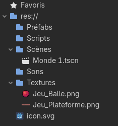
Avant de démarrer la création, je vais faire des modification dans les paramètres du projet :
-
Je commence par définir une couleur de fond pour mon environnement :
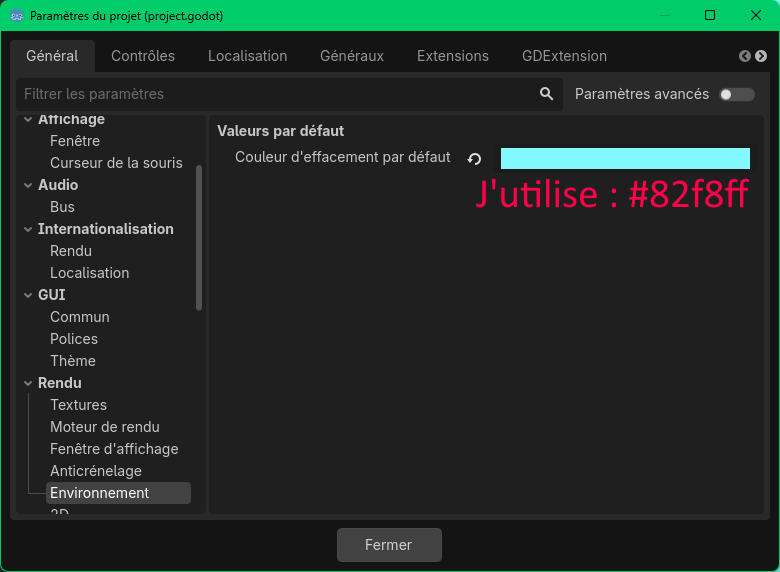
-
Je défini aussi le rendu pour que les images en pixel-art soit net :
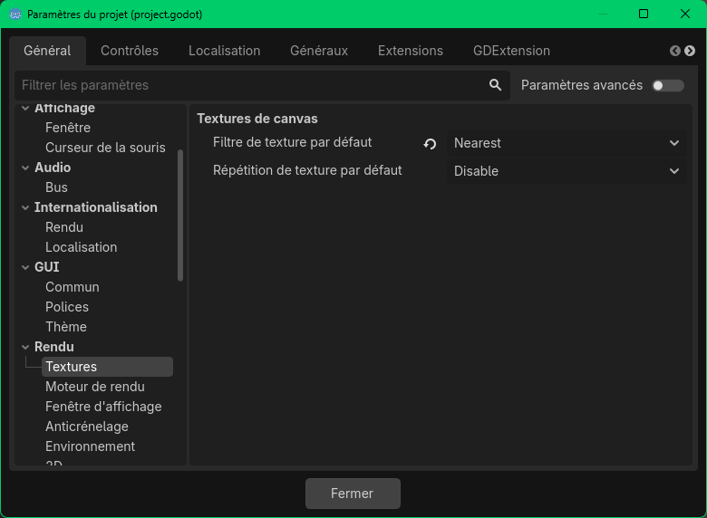
-
Enfin de défini plusieurs touches que je pourrais utiliser par la suite pour contrôler mon personnage :
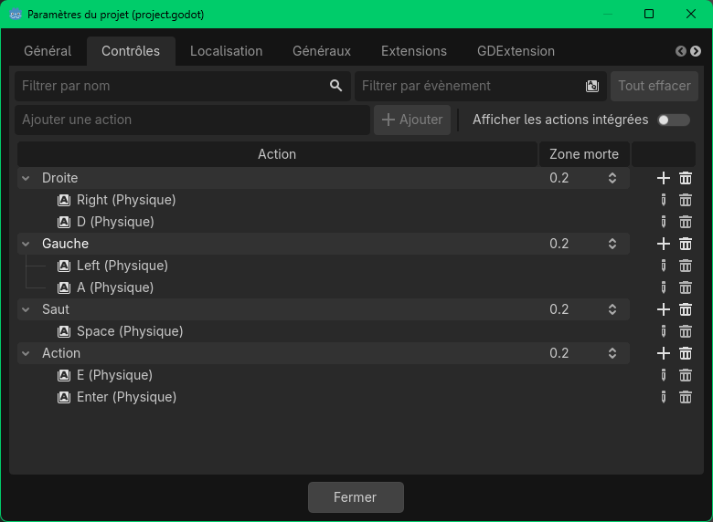
Création des premiers noeuds :
Nous pouvons enfin nous atteler la création. Pour commencer, je vais créer un personnage jouable et une plateforme très basique pour comprendre le principe de collision et de camera. Je commence par créer différents noeuds en utilisant le bouton d'ajout :
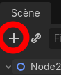
En faisant bien attention à la hierarchie des noeuds (L'ordre dans lequel ils sont créer), j'obtiens l'organisation suivante :
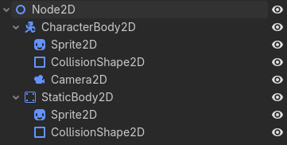
Si ce n'est pas le cas tu peut, en faisant des cliqué/glissé réorganiser tes noeuds. Pense a vérifier depuis l'Inspecteur que dans la partie Transform rien n'a été modifié. Il suffit de cliquer sur les flêches () si besoin.
J'effectue quelques modification dans le nom de mes noeuds pour m'y retrouver et j'utilise aussi l'option grouper () pour lier les différents élèments :
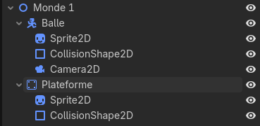
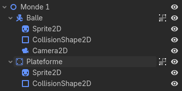
Il est temps maintenant de configurer les différents noeuds en commençant par ceux de la balle. Nous allons pouvoir associer notre image de balle à notre noeud Sprite2D. Je le selection et dans l'Inspecteur je peut accéder aux paramètres :
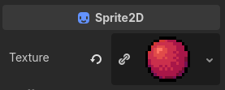
Pour gagner du temps voici les paramètres que j'ai modifié dans les différents noeuds.
Pour commencer ceux de la balle :
Le Sprite2D de la balle :
La
CollisionShape2D de la balle :
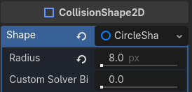
La
Camera2D :
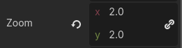
Et ceux de la plateforme :
Le
Sprite2D de la plateforme :
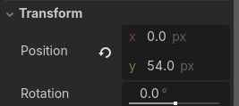
La
CollisionShape2D de la plateforme :
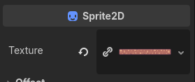
On obtient un scène qui ressemble à ça :
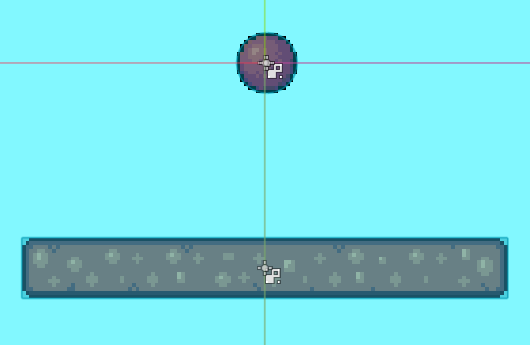
Programmation du joueur :
Il ne reste plus qu'à programmer le contrôle de la balle. Pour cela il faut ajouter un script à notre noeud Balle. Cliquer sur le noeud pour le selectionner et au dessus sur le boutton attacher un script (
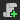
). Comme tu peut le voir dans l'image suivante, j'ai déjà modifier l'emplacement de sauvegarde de mon fichier pour le mettre dans mon dossier Scripts. J'ai garder le nom par défaut qui correcpond au nom de mon noeud. On peut aussi remarquer que j'ai volontairement désactivé l'utilisation d'un modèle, car je vais construire mon propre script.
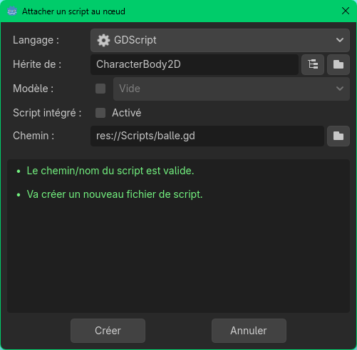
Voici le script entier que je vais utiliser. Je détails plus loin les différentes lignes qui le composent pour comprendre ce qu'il fait :
extends CharacterBody2D
@export var vitesse = 70.0
@export var gravite = 10.0
@export var force_saut = 200.0
# Exécuté à chaque frame de gestion physique (collision et détection de contact)
func _physics_process(delta):
# Ajout de la gravité.
if not is_on_floor():
velocity.y += gravite * delta * 100.0
# Gestion du saut.
if Input.is_action_just_pressed("Saut") and is_on_floor():
velocity.y = -force_saut * delta * 100.0
# On réinitialise la vitesse horizontale.
velocity.x = 0
# Test des touches gauche et droite et modification de la vitesse horizontale
if Input.is_action_pressed("Gauche"):
velocity.x -= vitesse * delta * 100.0
if Input.is_action_pressed("Droite"):
velocity.x += vitesse * delta * 100.0
move_and_slide()
En détails, voici la signification de chacune des lignes de code de mon programme :
Cette ligne signifie que je vais ajouter des fonctionnalité à notre noeud
CharacterBody2D en gardant les fonctions qui sont
déjà proposé par le moteur de jeu.
extends CharacterBody2D
Je définis ensuite trois variables qui permettent de configurer le comportement de ma balle. En utilisant le mot clé
@export, les variables deviennent modificable directement depuis l'inspecteur dans l'éditeur Godot. Cela permet, entre autre, de modifier les valeurs en cours de jeu pour tester en direct les modifications.
-
vitesse : définit la vitesse de déplacement horizontale de la balle.
-
gravite : définit la gravité impactant la balle et donc l'accélération verticale en chute.
-
force_saut : définit la force du saut, cette force décroit ensuite une fois la balle en l'air par l'effet de la gravité.
@export var vitesse = 70.0
@export var gravite = 10.0
@export var force_saut = 200.0
Pour définir les mouvements de notre personnage je vais programmer les actions des touches dans une
fonction du moteur de jeu _physics_process. Cette fonction est appelé à chaque frame du moteur physique de notre jeu. La valeur
delta correspond au temps écoulé lors de la frame précédente, il sert à lié le mouvement à la possible latence du jeu et donc avoir un déplacement toujours cohérent.
func _physics_process(delta):
On commence par ajouter la gravité à notre personnage. Cela n'est utile que si le personnage n'est pas sur le sol, on met donc en place une condition avec le mot clé if. Cela est détecté par notre CharacterBody2D grace à la fonction intégré is_on_floor(). Celle-ci renvoie Vrai si le personnage est sur un sol et Faux sinon.
# Ajout de la gravité.
if not is_on_floor():
velocity.y += gravite * delta * 100.0
On remarque que l'on utilise aussi une variable velocity qui définit la vitesse du personnage et sera utiliser par le moteur physique pour effectuer le déplacement lorsque je lui demanderais. Cette variable est un Vector2, un vecteur qui représente une direction en 2 dimensions (x pour la direction horizontale et y pour la direction verticale). A remarquer que la direction y pointe vers le bas pour le positif.
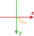
On gère ensuite le saut. On utilise le module Input (qui gère tous ce qui est relatif au action extérieurs : clavier, souris, manettes de jeu, etc...) pour tester si une action est effectué.
# Gestion du saut.
if Input.is_action_just_pressed("Saut") and is_on_floor():
velocity.y = -force_saut * delta * 100.0
Comme nous avons précédement configurer l'action Saut dans les paramètres du jeu, je peut tester si l'une des touches qui est associé est appuyé. Pour pouvoir sauter, ma balle doit être sur le sol d'ou la condition is_on_floor(). On peut aussi remarquer la négation de ma force de saut pour que celui-ci soit orienter vers le haut.
Les lignes suivantes suivent la même logique, on remarque l'utilisation du paramètre x de notre velocité.
# On réinitialise la vitesse horizontale.
velocity.x = 0
# Test des touches gauche et droite et modification de la vitesse horizontale
if Input.is_action_pressed("Gauche"):
velocity.x -= vitesse * delta * 100.0
if Input.is_action_pressed("Droite"):
velocity.x += vitesse * delta * 100.0
La dernière ligne permet de dire au moteur de jeu «ça y est j'ai fini de calculer la vitesse, maintenant effectue le déplacement de ma balle». Cela effectue le mouvement en prenant bien en compte les possibles collisions et modifie automatiquement la valeur de notre velocité.
move_and_slide()